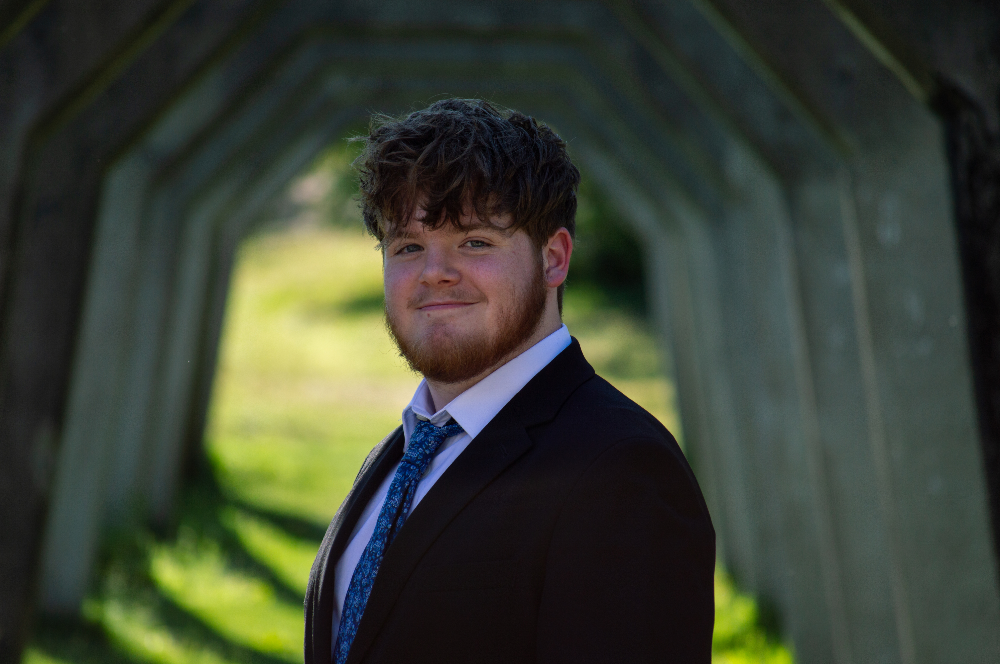

About Me

Hello! My name is Owen Maurer, and I am a photographer and engineering student from Seattle, WA, USA. I attend the University of Washington, and have been a photographer since 2019, when I started shooting photos with my old Android phone camera. Thankfully, I have developed my photography ability since then, but I am still eager to learn more. In high school, I founded and presided over my school's photography club, and am currently a member of Dubshot, UW's largest photography club. Outside of photography, I enjoy nature, sports, music, and watching movies.